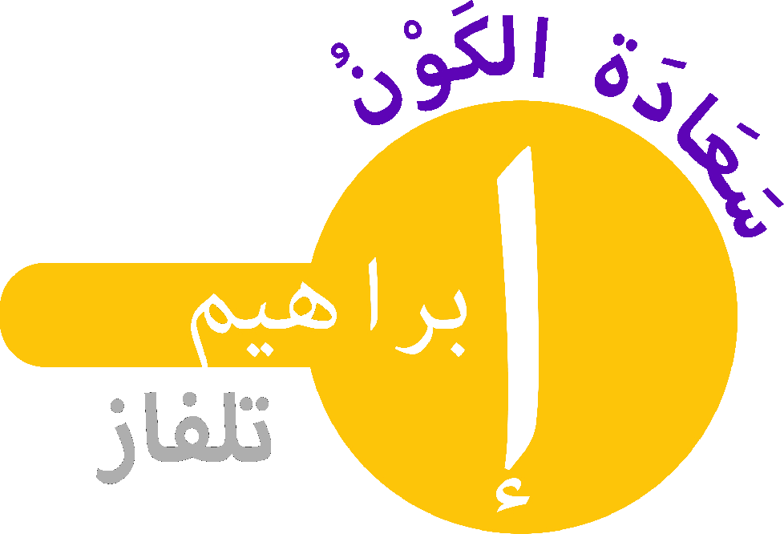

TASAVVUF
NAMAZLAR
DUALAR
DİGER
MOBİL UYGULAMALAR
EÛZUBİLLÂHİMİNEŞŞEYTÂNİRRACÎM
BİSMİLLÂHİRRAHMÂNİRRAHÎM
Sevgili okuyucular, Allah ile O’nun en kıymetli yaratığı olan insan arasındaki en büyük ilişki
vasıtası duadır.
Allah, Kendisinden talep edilendir. Kul, Allah’tan talep edendir.
Allah’a dua edilir. Dua, Allah’ı herhangibir şeyi yerine getirme konusundaki davetin adıdır.
Dua ve davet kelimeleri aynı kökten gelir.
Dünyaya ait olan duada, kişi ister Allah’a ulaşmayı dilesin ister dilemesin Allah o talebi
kabul eder. Yeter ki kişinin kalbinde talep olsun. Haksız para kazanma talebi... Ne olursa... Allahû Tealâ
onları kabul eder ama o insanlar o kadar da cezayı yüklenerek bu dünyadan ayrılırlar.
Kişi, Allah’a ulaşmayı dilemezse onun davetine icabet edilmez!
Allah’a ulaşmayı dilemeyenlerin kurtuluşları mümkün değildir! Onların Allah’ın cennetine
gitmek, dünya saadetine ulaşmak konusundaki talepleri kabul edilmez! Onların şükürleri de kabul edilmez!
Allahû Tealâ’nın yolunda eğer Allah’a manevî tekâmül konusunda dua edecekseniz, eğer siz,
Allah’a karşı tevekkül sahibi iseniz o zaman duanız mutlaka kabul edilir.
Kesin şekilde inanmak, kalbî talebin sahibi olmak demektir. İnsanlar Allah’a ulaşmayı
dilemedikçe, talepleri Allahû Tealâ tarafından kabul edilmez!
Allahû Tealâ’dan kalbinizden bir dilekte bulunmak, kalbinizle bir dilekte bulunmak, duadır.
Dua, Allah’ı davettir.
Allah’ı, ruhu Kendisine ulaştırmaya davettir.
Allah’ı, fizik vücudu teslim almaya davettir.
Allah’ı, nefsi teslim almaya davettir.
Allah’ı, bizleri irşada ulaştırmaya davettir.
Allah’ı, iradeyi teslim almasına davettir.
Allah, kalbinde inanç bulunanlara, o talebin sahibi olanlara gerekeni yapar. Allah ile
ilişkinizi sağlayan müessesenin adı, duadır. Ama kalbinizle dua etmediyseniz, sadece söz olarak dua ettiyseniz
bu Allah’ın katında bir değer ifade etmez. Allah söze bakmaz, kalbe bakar. Kalbinizde ne var?
Sevgili okuyucular, Allah’a bütün duaları “inanarak” edin!
Kalbinizde ne varsa, kalbiniz aynadır, onu Allah’a aksettirir. Diliniz aksettirmeye yeterli
değildir. Diliniz sadece kalbinizdekini söylediği taktirde, konuşmanız Allahû Tealâ tarafından dua hüviyetine
girer. Öyleyse Allahû Tealâ sizin kalbinizde olan inanç seviyesiyle ilişkilidir.
Îmân, duanın temelini teşkil eder.
Talep ettiğiniz şeyin Allahû Tealâ tarafından yerine getirileceğine inanın! İnanıyorsanız,
bu
inancın kalben sahibi iseniz Allahû Tealâ o talebinizi mutlaka yerine getirir.
Îmânınız, Allah katındaki miyarınızdır. Allah’ın size değer verme ölçüsü, îmânınızdır. Neye
ve
ne kadar inanıyorsunuz? Allah yolunda hangi güçlükler olursa olsun, hepsine katlanmaya hazır mısınız? Bu îmânı
kalbinize yerleştirdiniz mi, o zaman korkmayın! Güçlüklerin mahiyeti ne olursa olsun, hepsinin üstesinden
gelirsiniz.
Allah razı olsun.
Mihr Vakfı Genel Başkanı Efendi Hazretleri Dr. İskender Ali Mihr'in vakıf
hakkındaki kısa açıklaması:
Allah-û Tealâ 1989 yılında MİHR VAKFI'nı kurmayı nasip kıldı. MİHR VAKFI Allah
yolunda çalışan, Allah için
var olan bir vakıftır. Bu vakfın müntesiplerinin en güzele ulaşması, bu vakıf muhtevası içinde ele alınmıştır.
Atalarımız diyorlar ki:
"Bir elin nesi var, iki elin sesi var."
Biz çok elli, çok sesli bir dizaynın
sahibiyiz.
MİHR VAKFI TÜRKİYE'NİN VE İSLÂM'IN GELECEĞE AÇILAN BİR KÖPRÜSÜDÜR.
Gelecek; dünya üzerinde yeni olayların vücuda geleceği ve dinlerin tek bir din olarak bir araya getirileceği, bütün dinlerin aynı çatı altında birleştirileceği bir vasıf taşımaktadır.
VAKFIN KURULUŞ AMACI VE FAALİYETLERİ
Medeniyet-İrfan-Hayır-Ref (MİHR) vakfı 1989 yılında tesis edilmiş olup, 25.10.1989 tarihli
resmi gazetede Vakıflar Genel Müdürlüğünce ilan edilmiştir.
Vakıf Genel Merkezi, Ankara'dadır. Vakfın
gayeleri şunlardır (Vakıf senedi yani ana sözleşme madde 5):
1. Yardıma muhtaç kişilere yardım etmek.
2.
a. İslâm
b. Modern Teknoloji
c. Nükleer Fizik Kimya
d. Enerji
e. Ekonomi
f. Finans
g. İş Etütleri
3. İslâmi Teknik ve Sosyal İlimlerin yukarıda adı geçmeyen dalları ve bunların dışında kalan ilimler
alanlarında,
a. Araştırma yapmak ve yaptırmak
b. Yurt içinde ve dışında bu ilimlerin gelişmesi istikametinde her türlü
neşriyatta bulunmak,
konferans ve
seminerler düzenlemek ve düzenlenen seminerlere iştirak etmek,
c. Kurslar düzenlemek, fakülteler ve üniversiteler kurmak, mevcut üniversitelere
katılmaktır.
Vakfın bu ana gayeleri doğrultusunda ve kuruluşundan bu güne kadar geçen kısa bir zaman içinde
yurt içinde ve yurt dışında birçok seri konferanslar düzenlenmiştir. 1990 ve 1991 yıllarında A.B.D de, 1991'de
Azerbaycan'da, 1992 yılında Almanya'da ve Belçika'da İslâm ve Tasavvuf konularında Vakıf Genel Başkanı Sayın
İskender Erol Evrenosoğlu tarafından konferanslar verilmiştir. Ayrıca Ankara başta olmak üzere İstanbul,
İzmir, Aydın, Denizli'de Ocak 1992'den beri her ay seri konferanslar düzenlenmiştir.
Samsun,
Gaziantep, Malatya, Adana, Konya, Hopa, Gönen ve diğer bazı il ve ilçelerde de sık sık
konferanslar ve sohbetler tertiplemek suretiyle Vakıf, İslâmı, Peygamberimizin tebliği ve sahabenin yaşadığı
şekliyle yurtta ve dünyada anlatmak, yaşatmak için azimli bir faaliyet içinde bulunmaktadır. İslâm dünyasında
bu gün İslâm sadece şekil olarak yaşanmaktadır. Bir gurup insan tarafından birinci asr-ı saadet dönemindeki
İslâm yaşanmaktadır. Ancak bunlar çok azınlıkta kalmaktadır.
Kur'ân'a bütün olarak ittiba
etmek, Kur'ân'ın ruhuna, özüne inilerek İslâmı yaşamak ve yaşatmak
asıldır. Sahabe İslâm'ı nasıl yaşamış, nasıl hayatına tatbik etmiş ve nasıl irşad olmuş ise ve bu şekilde
İslâm şerefine nasıl ulaşmış ise, bizlerin de öyle İslâm'ı yaşamamız Allah'ın (C.C) kesin emridir. Şimdiki
İslâm'ın zahiri 5 şartı ile yaşamak Kur'ân hükümlerine göre eksik ve kurtuluşa götürmeyen bir anlayış ve
tatbik tarzıdır. Bu cümleden olarak Vakfımızca eserler yayınlanmaktadır. Tasavvuf alanındaki eserleri,
Tasavvuf Nurları, Kur'ân-ı Kerim Işığında Tasavvuf, Mutluluk-Tasavvuf-İslâm ve Sohbet. Tasavvufun Kur'ân-ı
Kerim'deki Kökleri, Sohbet. Ekonomi alanındaki eserleri, Türkiye'de Orta Vadeli Krediler, Türk Sanayiinin
Finansal Problemleri, Türk Banka Sisteminde Kaynak İsrafı, Federal Almanya- Türkiye İşgücü ilişkileri,
Türkiye'de Enflasyon Probleminin Çözümü ve Kalkınma adlı eserleri yayınlanmıştır. Ayrıca Enerji-Madde ve Hız
Kanunları adlı eserler yayınlanmış bulunmaktadır. Bunlardan, Enerji-Madde ve Hız Kanunları ile Sohbet adlı
eserler İngilizceye çevrilmiştir.
İMAM İSKENDER ALİ MİHR HAZRETLERİ KİMDİR?
İMAM İSKENDER ALİ MİHR KİMDİR?
TANITIM BELGESELİ (1:27:09)
Efendi Hazretleri
Tanıtım Videosu (0:15:56)
Efendi Hazretleri
Tanıtım Videosu (0:16:20)
İskender Erol Evrenosoğlu Eşref Rumi Hazretleri'nin bir işareti ile 29.11.1933 tarihinde
ailenin üçüncü ve tek erkek evladı olarak İznik'te dünyaya gelmiştir. Bozoklu Han'dan başlayan soy kütüğüne
sahiptir. Şeriftir. Evli ve iki çocuk babasıdır.
İlk, orta ve lise tahsilini Bursa'da tamamlamıştır. 1956'da İstanbul Yüksek Ekonomi ve
Ticaret
Okulu (şimdiki Marmara Üniversitesi), Banka ve Muhasebe Bölümünden mezun olmuştur. Yüksek Lisans'ını ODTÜ'de
ekonomi üzerine yapmıştır.
Askerliğini 1957-1958 yılları arasında Kore'de tamamlamıştır.
Kamu İktisadi Teşekkülleri, Türkiye Vakıflar Bankası ve DPT'de (Devlet Planlama
Teşkilatı'nda)
Müfettişlik, Müdürlük, Uzmanlık görevlerinde bulunmuştur. Müfettiş olarak, Bandırma'da daha sonra Tokat'ta
görev almıştır. 1972 yılında DPT'den ayrılan Efendi Hazretleri, Fizibilite etütleri yapan bir iş yeri
açmıştır. Daha sonra İktisadi Planlama bölümünde çalışmak üzere Devlet Planlama Teşkilatı'ndaki görevine
tekrar çağırılmıştır.
O yıllarda Planlama, Teşvik ve Uygulama'da Türkiye İktisat Meseleleri dergilerinde ve
Ticaretliler Dergisi'nde yazmıştır. Ege Dergisi'nde Teşvik ve uygulamayla alâkalı yeni çıkan kararnameleri
dizayn etmiştir.
1989 yılında, İslâm, Modern Teknoloji, Nükleer Fizik, Kimya, Enerji, Ekonomi, Finans, İş
Etütleri alanlarında çalışmalar yapan, yurt içinde ve yurt dışında bu ilimlerin gelişmesi istikametinde
konferans ve seminerler düzenleyen MİHR VAKFI'NI kurmuştur. Halen vakfın Genel Başkanlığı'nı yürütmektedir.
Manevi alandaki eserlerinde Allah-û Tealâ'nın kendisine verdiği İmam İskender Ali MİHR
ünvanını
kullanmaktadır.
1992 yılında yayın hayatına başlayan aylık MİHR DERGİSİ'nin başyazarıdır. Şu anda uydu
üzerinden yayın yapan MİHR TV ve MİHR RADYOSU'nun kurucusudur. Efendi Hazretleri İmam İskender Ali Mihr,
kâinattaki ilk ve tek "ALLAH'IN ÜNİVERSİTESİ'ni (UNIVERSITY OF ALLAH)" 1 Nisan 2000 tarihinde kurmuştur. Aynı
zamanda üniversitenin Rektörüdür.
Üniversitede verdiği Tefsir derslerine paralel olarak, Kur'ân-ı Kerim'deki her âyetin
Arapçası,
Latincesi, Türkçesi ve kelime kelime mealiyle dizayn edilen KURAN-I KERİM TEFSİRİ 19 cilt olarak
hazırlanmaktadır.
ÇALIŞMALARI
MAKRO EKONOMİ ALANINDA YAYINLANMIŞ KİTAPLARI
1. Likit Mekanizma
2. Türkiye'de Ekonomik Darboğazdan Nasıl Kurtulunur?
3. Türkiye'de Enflasyon Probleminin Çözümü ve Kalkınma
4. Türkiye'de Orta Vadeli Krediler (1973)
5. Türkiye Sanayisinde Finansal Problemler (1974)
6. Türkiye Bankalar Sisteminde Kaynak İsrafı (1984)
7. Türkiye Federal Almanya İşgücü İlişkileri (1973)
DPT KÜTÜPHANESİNDEKİ ARAŞTIRMALARINDAN BİRKAÇI
1. Mevduat Hacminin Türkiye'nin Kalkınmasındaki Yeri
2. Para Arzı ve Fiyat İlişkileri
3. Para Çoğaltanı Faktörü ve Finansal Sistem
4. Türkiye'de Emisyon, Paranın Devir Hızı ve Enflasyon Hızı Arasındaki İlişkiler
5. Türkiye'de Enflasyon Teşhis ve Tedavisi
6. Türkiye'deki 10 Bankanın Analizi ve Türkiye
7. Tasarruf Bonoları ve Kalkınma Bankası Hakkında Rapor
8. Ticari Krediler ve Yatırım Kredileri
9. 1982 yılında Türk Bankacılık Sistemindeki Likit Mekanizma ve Kaynak İsrafı
10. Türk Bankacılığı Sisteminde Krediler ve İştirakler
11. Bankalardaki Tasarrufların Maliyeti ve Verimlilik
12. Kredi Gelirlerinin Hesaplanması ve Tasarruf Faizlerinin Maliyeti
13. Türkiye Bankalar Sisteminde Kredi Mevduat İlişkisi
14. Çalışma Bakanlığı'nca Hazırlanmış Olan "İşsizlik Sigortası Kanun Tasarısı"
Hakkında
15. 1983 Yılının 8. Ayı Sonunda Türkiye Bankacılığında Durum Özeti
MANEVİ ALANDAKİ MAKALELERİ
1. Sebil Mecmuası 13 makale
2. Milli Gazete 17 makale
MAKRO EKONOMİ ALANINDAKİ MAKALELERİ
1. Türkiye İktisat Gazetesi'nde 33 makale
2. Ticaret Dergisi'nde 8 makale
KONFERANSLARI
(Efendi Hazretleri'nin tüm konferansları için tıklayın.)
1. 1990-1991 A.B.D
2. 1991 Azerbaycan
3. 1992 Almanya ve Belçika
4. 1992 Ankara, İstanbul, İzmir, Aydın, Denizli 'de aylık
5. Samsun, Gaziantep, Malatya, Adana, Konya, Hopa, Gönen ve bazı illerde periyodik
konferanslar
MANEVİ ALANDAKİ KİTAPLARI
1. Mutluluk Tasavvuf İslâm
2. Sohbet
3. Kur'ân'da ki İslâm
4. Islam In The Quran
5. Risalet Nurları
6. Tövbe
7. Yeminler
8. Vuslat
9. Tebliğ
10. Kader Kaza
11. Vel Asr 1
12. Vel Asr 2
13. Vel Asr 3
14. Vel Asr 4
15. Mü'min Olmak
16. Tevhid
17. Tekzib
18. Tavzih
19. Nezir
20. Şiirler
21. Gizlenerek Ve Saptırılarak Cennete Girmeye Mani Olan Kur'ân-ı Kerim Mealleri
22. Kadir Gecesi
23. What's Islam
24. Tasavvuf Der Islam Im Kuran
25. İslâm Mutluluk Tasavvuf
26. İslâmiyet Ve Tasavvuf 1 ve 2. Cilt
27. Kur'ân-ı Kerim Tefsiri (19 cilt)
1. Virdi 7000 zikirle başlar ve 47000'e ulaşıncaya kadar 15 günde bir 2000 artırır.
2. Beş vakit namazı, her vaktin kazası ile birlikte kılar. Vaktin kazasında vakit
farz namazı kılınır.
3. Teheccüd ve kuşluk namazlarını kılar.
4. Hergün Esma-ül Hüsna âyetlerini okur.
5. Esma-ül Hüsna'yı yanlarında gösterilen sayıda okur. (El İlâh, El Masîr hergün
çekilmelidir.)
6. Ramazan ayında tuttuğu oruca ilâveten perşembe günleri, kandillerde ve
Muharrem'in 10. günü ve bazı özel
günlerde oruç tutar.
7. 125 defa "subhânallâhu vel hamdu lillâhi ve lâ ilâhe illallâhu vallâhu
ekber, ve lâ havle ve lâ
kuvvete illâ billâhil aliyyul azîm" çeker.
8. 250 defa "allâhumme salli alâ seyyidinâ muhammedin ve alâ alî seyyidinâ
muhammed" çeker.
Takriben 2,5m.x2,5m. ebatlarında tülbentten yapılmış beyaz vird örtüsü altında, yatmadan önce,
sabah ezanından önce veya ne zaman istenirse 25 defa uzun olarak "estağfurullah" çekilir. Her
"estağfurullah" kelimesi, derinden alınan nefes yavaş yavaş bırakılırken, nefes bitene kadar uzatılarak
söylenir.
7 Fatiha Suresi okunur ve "Yarabbi, okuduğum Fatihaları başta Peygamber
Efendimiz (S.A.V)'e
ve bütün peygamberlere, kıymetli ashabına, bütün mürşidlere ve Mehdi (A.S)'a hediye ettim, kabul buyur."
denilerek bağışlanır. Mürşid düşünülür (rabıta).
Sabah namaz vaktinden ertesi sabah namazı
vaktine kadar bildirilen sayıda zikir yapılır. Her
100, 500 veya 1000 "Allah" zikrinden sonra; "ilâhi ente maksudî ve rızake matlubî"
denir.
Günün diğer saatlerinde verilen sayıda zikrini tamamlayabilmek için gün içinde vakit
buldukça
25 kısa "estağfurullah"tan sonra tesbihini çekerek Allah'ı zikreder. Tesbihini bitirirken 25 kısa
"estağfurullah" çeker.
Günlük vird bitirilmiş olsa da her an; ayaktayken, otururken ve
yanüstü yatarken de
"Allah" zikri devam ettirilmeye gayret edilir.
GÖK KATLARINA GÖRE ZİKRİN ÇEKİLMESİ
1. İlk 15 bin "Allah" zikri; 1. katta (sol göğsün 4 parmak altında) çekilir.
2. Sonraki 2 bin "Allah" zikri; 2. katta (sağ göğsün 4 parmak altında)
çekilir (zikir sayısı 17.000'e
tamamlanır).
3. Sonraki 2 bin "Allah" zikri; 3. katta (sol göğsün 4 parmak üstünde)
çekilir (zikir sayısı 19.000'e
tamamlanır).
4. Sonraki 2 bin "Allah" zikri; 4. katta (sağ göğsün 4 parmak üstünde)
çekilir (zikir sayısı 21.000'e
tamamlanır).
5. 5- Sonraki 2 bin "Allah" zikri; 5. katta (boyunda, köprücük kemiklerinin
omuzlardan îmân tahtası
denen kemiğe uzanan kemiklerin bittiği yerde) çekilir (zikir sayısı 23.000'e tamamlanır).
6. Sonraki 2 bin "Allah" zikri; 6. katta (alında sağ ve sol kaşların
birleştiği yerin az üstü) çekilir
(zikir sayısı 25.000'e tamamlanır).
7. Sonraki 22 bin "Allah" zikri; 7. katta (alınla saçın birleştiği yerde)
çekilir (zikir sayısı
47.000'e tamamlanır).
5/MAİDE-97: Cealallâhul ka'betel beytel harâme kıyâmen lin nâsi veş
şehral harâme vel hedye
vel kalâid(kalâide), zâlike li ta'lemû ennellâhe ya'lemu mâ fîs semâvâti ve mâ fîl ardı ve ennallâhe bikulli
şey'in alîm(alîmun).
19/MERYEM-19, 20: Kâle innemâ ene resûlu rabbiki li ehebe leki
gulâmen zekiyyâ(zekiyyen)
kâlet ennâ yekûnu lî gulâmun ve lem yemsesnî beşerun ve lem eku bagıyyâ(bagıyyen).
21/ENBİYA-32, 33: Ve cealnes semâe sakfen mahfûzâ(mahfûzen), ve
hum an âyâtihâ
mu'ridûn(mu'ridûne) ve huvellezî halakal leyle ven nehâre veş şemse vel kamer(kamere), kullun fî felekin
yesbehûn(yesbehûne).
33/AHZAB-27, 28, 29: Ve evresekum ardahum ve diyârehum ve
emvâlehum ve ardan lem tetauhâ,
ve
kânallâhu alâ kulli şey'in kadîrâ(kadîran) yâ eyyuhen nebiyyu kul li ezvâcike in kuntunne turidnel hayâted
dunyâ ve ziynetehâ fe teâleyne umetti'kunne ve userrihkunne serâhan cemîlâ(cemîlen) ve in kuntunne
turidnallâhe ve resûlehu ved dârel âhırete fe innallâhe eadde lil muhsinâti minkunne ecren azîmâ(azîmen).
7/A'RAF-14, 15: Kâle enzırnî ilâ yevmi yub'asûn(yub'asûne) kâle
inneke minel
munzarîn(munzarîne).
5/MAİDE-9: Vaadallâhullezîne âmenû ve amilûs sâlihâti lehum
magfiretun ve ecrun
azîm(azîmun).
18/KEHF-10, 11, 12: İz evel fityetu ilel kehfi fe kâlû rabbenâ
âtinâ min ledunke rahmeten
ve
heyyi' lenâ min emrinâ reşedâ(reşeden) fe darabnâ alâ âzânihim fîl kehfi sinîne adedâ(adeden) summe beasnâhum
li na'leme eyyul hızbeyni ahsâ limâ lebisû emedâ(emeden).
39/ZUMER-23: Allâhu nezzele ahsenel hadîsi kitâben muteşâbihen
mesâniye takşaırru minhu
culûdullezîne yahşevne rabbehum, summe telînu culûduhum ve kulûbuhum ilâ zikrillâh(zikrillâhi), zâlike
hudallâhi yehdî bihî men yeşâu, ve men yudlilillâhu fe mâ lehu min hâd(hâdin).
5/MAİDE-28: Le in besadte ileyye yedeke li taktulenî mâ ene bi
bâsitın yediye ileyke li
aktulek(aktuleke), innî ehâfullâhe rabbel âlemîn(âlemîne).
2/BAKARA-126: Ve iz kâle ibrâhîmu rabbic'al hâzâ beleden âminen
verzuk ehlehu mines
semerâti
men âmene minhum billâhi vel yevmil âhır(âhiri), kâle ve men kefere fe umettiuhu kalîlen summe adtarrûhu ilâ
azâbin nâr(nâri), ve bi'sel masîr(masîru).
41/FUSSİLET-12: Fe kadâhunne seb'a semâvâtin fî yevmeyni ve evhâ
fî kulli semâin emrehâ
ve
zeyyennes semâed dunyâ bi mesâbîha ve hıfzâ(hıfzen), zâlike takdîrul azîzil alîm(alîmi).
39/ZUMER-17: Vellezînectenebût tâgûte en ya'budûhâ ve enâbû
ilâllâhi lehumul buşrâ, fe
beşşir ibâd(ibâdi).
16/NAHL-98: Fe izâ kare'tel kur'âne festeız billâhi mineş
şeytânir racîm(racîmi).
17/İSRA-80: Ve kul rabbi edhılnî mudhale sıdkın ve ahricnî
muhrece sıdkın vec'al lî min
ledunke sultânen nasîrâ(nasîren).
19/MERYEM-17: Fettehazet min dûnihim hicâben fe erselnâ ileyhâ
rûhanâ fe temessele lehâ
beşeren seviyyâ(seviyyen).
21/ENBİYA-83: Ve eyyûbe iz nâdâ rabbehû ennî messeniyed durru ve
ente erhamur
râhimîn(râhimîne).
21/ENBİYA-89: Ve zekeriyyâ iz nâdâ rabbehu rabbi lâ tezernî
ferden ve ente hayrul
vârisîn(vârisîne).
21/ENBİYA-92: İnne hâzihî ummetukum ummeten vâhıdeten ve ene
rabbukum
fa'budûn(fa'budûni).
21/ENBİYA-107: Ve mâ erselnâke illâ rahmeten lil âlemîn(âlemîne).
21/ENBİYA-112: Kâle rabbıhkum bil hakk(hakkı), ve rabbuner
rahmânul musteânu alâ mâ
tasıfûn(tasıfûne).
22/HAC-68: Ve in câdelûke fe kulillâhu a'lemu bimâ
ta'melûn(ta'melûne).
23/MU'MİNUN-26: Kâle rabbinsurnî bimâ kezzebûn(kezzebûni).
39/ZUMER-19: E fe men hakka aleyhi kelimetul azâb(azâbi), e fe
ente tunkızu men fîn
nâr(nâri).
23/MU'MİNUN-29: Ve kul rabbi enzilnî munzelen mubâreken ve ente
hayrul
munzilîn(munzilîne).
23/MU'MİNUN-93: Kul rabbi immâ turiyennî mâ yûadûn(yûadûne).
23/MU'MİNUN-94: Rabbi fe lâ tec'alnî fîl kavmiz
zâlimîn(zâlimîne).
23/MU'MİNUN-97: Ve kul rabbi eûzu bike min hemezatiş
şeyâtîn(şeyâtîni).
23/MU'MİNUN-98: Ve eûzu bike rabbi en yahdurûn(yahdurûni).
23/MU'MİNUN-118: Ve kul rabbigfir verham ve ente hayrur
râhımîn(râhımîne).
25/FURKAN-6: Kul enzelehullezî ya'lemus sırre fîs semâvâti vel
ard(ardı), innehu kâne
gafûran rahîmâ(rahîmen).
26/ŞUARA-62: Kâle kellâ, inne maiye rabbî seyehdîn(seyehdîni).
26/ŞUARA-83: Rabbi heb lî hukmen ve elhıknî bis
sâlihîn(sâlihîne).
26/ŞUARA-85: Vec'alnî min vereseti cennetin naîm(naîmi).
EÛZUBİLLÂHİMİNEŞŞEYTÂNİRRACÎM
BİSMİLLÂHİRRAHMÂNİRRAHÎM
| Allah (El İlâh) - 269 |
| El Masîr - 535 |
| El Mugnî - 1337 |
| Es Sabûr - 519 |
| El Vedûd - 372 |
| El Vehhâb - 218 |
| Es Semîu - 351 |
| El Fettâh - 1082 |
| El Muhyî - 190 |
| El Kayyûm - 444 |
| El Muizz - 236 |
| El Mukaddim - 638 |
| El Hamîd - 283 |
| Eş Şekûr - 813 |
| El Muktedir - 1115 |
| El Hakîm - 280 |
| El Gafûr - 1563 |
| El Kâdir - 745 |
| Er Rahmân - 544 |
| El Azîm - 1201 |
| Es Samed - 358 |
| Er Rahîm - 449 |
| El Halîm - 250 |
| El Ehad - 303 |
| El Habîr - 954 |
| El Vâhid - 385 |
| El Muheymin - 303 |
| El Latîf - 242 |
| El Vâlî - 285 |
| El Bâtın - 309 |
| Er Raşîd - 745 |
| El Vâris - 974 |
| El Vâsiu - 453 |
| El Mu’min - 368 |
| Ez Zâhir - 1367 |
| Es Selâm - 402 |
| El Mukît - 752 |
| El Âhir - 1061 |
| El Kuddûs - 660 |
| El Hafîz - 1140 |
| El Evvel - 356 |
| El Melik - 262 |
| El Kebîr - 385 |
| El Muahhir - 1782 |
| El Bâriu - 405 |
| El Aliyy - 223 |
| Er Rauf - 433 |
| El Hâlık - 1112 |
| El Kerîm - 472 |
| El Afuvv - 375 |
| El Kaviyy - 354 |
| El Vekîl - 265 |
| Et Tevvâb - 689 |
| El Azîz - 157 |
| El Hakk - 578 |
| El Berr - 543 |
| Er Rezzâk - 657 |
| Eş Şehîd - 481 |
| El Muteâlî - 824 |
| El Âti - 350 |
| El Bedîu - 248 |
| El Mucîb - 157 |
| Er Rakîb - 534 |
| El Gaffâr - 1683 |
| El Bâis - 755 |
| El Ganî - 1258 |
| El Musavvir - 688 |
| El Mecîd - 258 |
| El Câmiu - 394 |
| Er Râfiu - 602 |
| El Muîd - 335 |
| El Mubdiu - 208 |
| El Bâsıt - 323 |
| El Muhsî - 354 |
| Mâlikul Mulk - 837 |
| El Velî - 175 |
| El Hâdî - 242 |
| El Alîm - 302 |
| El Metîn - 608 |
| En Nûr - 458 |
| El Adl - 305 |
| El Mâcid - 368 |
| En Nâfiu - 438 |
| El Hakem - 269 |
| El Vâcid - 360 |
| Ed Dârr - 1535 |
| El Basîr - 448 |
| El Hayy - 100 |
| Eş Şafi - 884 |
1. SABAH NAMAZI
1.1 Borc (2 rekât)
1.2 Sünnet (2 rekât)
1.3 Farz (2 rekât)
1.4 Hamd ve Şükür namazı (4 rekât)
2. KUŞLUK NAMAZI
Namazın vakti, güneş doğmasından 1 saat sonra başlar, öğle ezanının yarım saat öncesinde biter. Böylece sadece farzlardan oluşan 11 rekâtlık namaz kılınmış olur.
Kuşluk namazında niyetler şöyledir:
2.1 Kuşluk sünneti niyetine, öğle (günorta) namazının borcuna (4 rekât)
2.2 Kuşluk sünneti niyetine, ikindi namazının borcuna (4 rekât)
2.3 Kuşluk sünneti niyetine, akşam (şam) namazının borcuna (3 rekât)
Bir günlük geçmiş namazın borcunu, bu süreler içinde kıldığımız zaman hem kuşluk ve teheccüd namazlarının sevabını kazanırız hem de borcumuzu öderiz.
3. ÖĞLE NAMAZI
3.1 Borc (4 rekât)
3.2 Ön Sünnet (4 rekât)
3.3 Farz (4 rekât)
3.4 Son Sünnet (2 rekât)
4. IKINDI NAMAZI
4.1 Borc (4 rekât)
4.2 Ön Sünnet (4 rekât)
4.3 Farz (4 rekât)
4.4 Hamd və Şükür namazı (4 rekât)
5. AXŞAM NAMAZI
5.1 Borc (3 rekât)
5.2 Farz (3 rekât)
5.3 Sünnet (2 rekât)
6. YATSI NAMAZI
6.1 Farzın Borcu (4 rekât)
6.2 Vitrin borcu (3 rekât)
6.3 Ön Sünnet (4 rekât)
6.4 Farz (4 rekât)
6.5 Son Sünnet (2 rekât)
6.6 Vitir namazı (3 rekât)
7. TEHECCÜD NAMAZI
Gece, kış saati uygulamasında saat 24.00'te, yaz saati uygulamasında saat 01.00'de başlayan imsak vaktinde son bulan süre içerisinde kılınır. Böylece sadece farzlardan oluşan 9 rekâtlık namaz bitirilir.
Teheccüd namazında niyetler şöyledir:
7.1 Teheccüd sünneti niyetine, sabah (süb) namazının borcuna (2 rekât)
7.2 Teheccüd sünneti niyetine, yatsı (gecə) namazının borcuna (4 rekât)
7.3 Teheccüd sünneti niyetine, vitr namazının borcuna (3 rekât)
4 rekâttır. Hacet namazının persembeyi cumaya bağlayan gecelerde veya kandil gecelerinde
kılınması asıldır ama bütün gecelerde de kılınabilir. Önce boy abdesti alınır. Sonra hacet namazına niyet
edilir.
1. Rekât: Sübhaneke + Fâtiha + 3 Âyetel Kürsî
2. Rekât: Fâtiha + İhlâs + Felâk + Nas
Oturuş: Ettehiyyâtü
3. Rekâtta: Fâtiha + İhlâs + Felâk + Nas
4. Rekâtta: Fâtiha + İhlâs + Felâk + Nas
Oturuş: Et Tehiyyatü + Allahümme Salli + Allahümme Barik + Rabbena
Namazdan sonra duada: Allah'tan hacet neyse o istenir. Allah'tan mürşid istemek için bu namaz
kılındıysa mürşid istenir.
Bu namazdan sonra hiç konuşmadan yatmak gerekir. Yatarken kıbleyi sağa alacak şekilde yatak
kurulur. Vücudun ön cephesi kıbleye çevrilerek yan üstü yatılır. 3 Âyetel Kürsî okunur ve Allah'tan mürşid
istenir. Eğer kişinin haceti mürşid değil de başka bir hedefe ulaşmaksa (zahirî veya batinî bir hedef
olabilir) o hedefe ulaşmak istenir. Sessiz zikir (hafî zikir) bu istekten sonra başlar. Yan üstü yatıldığı
için sağ kulak yastığa gelecektir. Baş biraz sağa, sola oynatılarak kulakta kalbin atışlarının, basınç
sebebiyle rahatça duyulacağı pozisyona gelinir. Ve kalbin her çift atışında "Allah, Allah" diyerek kişi
Allah'ı zikr-i hafî ile (yani sessiz olarak) içinden zikredecektir.
Eğer ilk namazdan sonra yatıldığında bir şey görülmez ise, tekrar tekrar her perşembeyi
cumaya
bağlayan gece namaza devam edilmelidir. Her gece de kılınabilir.
4 rekâttır. Sabah namazının arkasından ve perşembe iftarlarda akşam namazından sonra
kılınır. (Ayrıca
istenildiği her an kılınabilir.)
1. Rekât: Sübhaneke + FÂTİHA + 7/A'RAF-43
2. Rekât: FÂTİHA + 27/NEML-19
Oturuş: Ettehiyyâtü
3. Rekâtta: FÂTİHA
4. Rekâtta: FÂTİHA
Oturuş: Et Tehiyyatü + Allahümme Salli + Allahümme Barik + Rabbena
7/A'RAF-43: Ve kâlûl hamdu lillâhillezî hedânâ li hâzâ ve mâ kunnâ li nehtediye lev lâ
en hedânallâh(hedânallâhu), lekad câet rusulu rabbinâ bil hakk(hakkı).
27/NEML-19: Ve kâle rabbi evzı'nî en eşkure ni'metekelletî en'amte
aleyye ve alâ
vâlideyye ve en a'mele salihan terdâhu ve edhılnî bi rahmetike fî ibâdikes sâlihîn(sâlihîne).
4 rekâttır. İstenildiği her an kılınabilir:
1. Rekât: Sübhaneke + FÂTİHA + 4/NİSÂ-64
2. Rekât: FÂTİHA + 23/MU'MİNUN-40
Oturuş: Ettehiyyâtü
3. Rekâtta: FÂTİHA
4. Rekâtta: FÂTİHA
Oturuş: Et Tehiyyatü + Allahümme Salli + Allahümme Barik + Rabbena
4/NİSÂ-64: Ve mâ erselnâ min resûlin illâ li yutâa bi
iznillâh(iznillâhi), ve lev
ennehum iz zalemû enfusehum câuke festagferûllâhe vestagfere lehumur resûlu le vecedûllâhe tevvâben
rahîmâ(rahîmen).
23/MU'MİNUN-40: Kâle ammâ kalîlin le yusbihunne nâdimîn(nâdimîne).
2 rekâttır. Bu dünya için istediğimiz bir işi yapıp yapmayacağımıza karar vermek için
kılınır.
1. Rekât: Sübhaneke + FÂTİHA + KÂFİRÛN
2. Rekât: FÂTİHA + 112/İHLÂS
Oturuş: Et Tehiyyatü + Allahümme Salli + Allahümme Barik + Rabbena
Namazdan sonra vücut, kıbleye dönük olacak şekilde yatılır.
Rüyada görülen beyaz veya yeşil renk olumlu, siyah veya kırmızı renk olumsuz anlamına gelir.
SÜBHANEKE
Subhâneke allâhumme ve bi hamdik(hamdike) ve tebârekesmuk(tebârekesmuke) ve teâlâ
cedduk(cedduke) (ve
celle
senâuke) ve lâ ilâhe gayruk(gayruke).
("ve celle senâuk" cenaze namazlarında okunur.)
ET TEHİYYATÜ
Et tehıyyâtu lillâhi ves salavâtu vet tayyibâtu es selâmu aleyke eyyûhen nebiyyu
ve rahmetullâhi ve
berekâtuh, es selâmu aleynâ ve alâ ibâdillâhis sâlihin(sâlihine) eşhedu en lâ ilâhe illâllâh ve eşhedu
enne muhammeden abduhu ve resûluh(resûluhu).
ALLAHÜMME SALLİ
Allâhumme salli alâ seyyidinâ muhammedin ve alâ âli muhammedin kemâ salleyte alâ
ibrâhîme ve alâ âli
ibrâhîme
inneke hamîdun mecîd(mecîdun).
ALLAHÜMME BARİK
Allâhumme bârik alâ muhammedin ve alâ âli muhammedin kemâ bârekte alâ ibrâhîme ve
alâ âli ibrâhîme inneke
hamîdun mecîd(mecîdun).
RABBENA ATİNA
Rabbenâ âtinâ fîd dunyâ haseneten ve fîl âhirati haseneten ve kınâ azâben
nâr(nâri).
RABBENA FİRLİ
Rabbenâgfirlî ve li vâlideyye ve lil mu'minîne yevme yekûmul hisâbu.
KUNUT DUALARI
* Allâhumme innâ nesteînuke ve nestagfiruke ve nestehdîke ve nu'minu bike ve
netûbu ileyk(ileyke) ve
netevekkelu aleyk(aleyke) ve nusnî aleykel hayr(hayra) kullehu neşkuruke ve lâ nekfuruk (nekfuruke) ve nahleu
ve netruku men yefcuruk(yefcuruke).
* Allâhumme iyyâke nâ'budu ve leke nusalli ve nescudu ve ileyke nes'â ve nahfidu,
nercû rahmeteke ve nahşâ
azâbeke inne azâbeke bil kuffâri mulhık mulhıke).
Her namazın sonunda okunur.
Ey Yüce Allah'ım! Bize vererek ihsan ettiğin ve vermeyerek ihsan ettiğin ni'metler için Sana sonsuz (mahlûkatının sayısı kadar) hamd ve şükrederiz. Sana sonsuz tövbe ve istiğfar ederiz. Günahlarımızı affetmeni ve bize mağfiret eylemeni dileriz. Bütün insanların bu sonsuz saadete ulaşmalarını dileriz. Ey Yüce Allah'ım! Fıska ve dalâlete düşmeden Senden hayır ve hasenat dileriz. Bu hayır ve hasenatın hamdini, uygun gördüğün biçimde eda etmeyi nasip eyle.
AÇILIŞ DUASI
EÛZUBİLLÂHİ MİNEŞ ŞEYTÂNİR RACÎM, BİSMİLLÂHİR RAHMÂNİR RAHÎM.
El Fatiha meas salâvât...
Ey Yüce Allah'ım! Bizlere en'am buyurduğun bu tayyib ni'metlerle bizleri bugün de
rızıklandırdığın için ve
bugün de
karnımızı bu tayyib ni'metlerle doyurmayı nasip kıldığın için Sana sonsuz hamd ve şükrolsun. Niyet ettik,
Senin rızan için ihsan
buyurduğun bu tayyib ni'metlerle bugünkü rızkımızı almaya...
EÛZUBİLLÂHİ MİNEŞ ŞEYTÂNİR RACÎM, BİSMİLLÂHİR RAHMÂNİR RAHÎM.
IFTARDA - AÇILIŞ DUASI
EÛZUBİLLÂHİ MİNEŞ ŞEYTÂNİR RACÎM, BİSMİLLÂHİR RAHMÂNİR RAHÎM.
El Fatiha meas salâvât...
Ey Yüce Allah'ım! Bizlere en'am buyurduğun bu tayyib ni'metlerle bu akşam da bizleri
rızıklandırdığın için ve
bu akşam da Senin rızan için tuttuğumuz orucu açmayı nasip kıldığın için Sana sonsuz hamd ve şükrolsun. Niyet
ettik, Senin rızan için ihsan buyurduğun bu tayyib ni'metlerden bu akşamki rızkımızı almaya ve bu akşam da
Senin rızan için tuttuğumuz orucu açmaya...
EÛZUBİLLÂHİ MİNEŞ ŞEYTÂNİR RACÎM, BİSMİLLÂHİR RAHMÂNİR RAHÎM.
KAPANIŞ DUASI
EÛZUBİLLÂHİ MİNEŞ ŞEYTÂNİR RACÎM, BİSMİLLÂHİR RAHMÂNİR RAHÎM.
Ey Yüce Allah'ım! Bizlere en'am buyurduğun bu tayyib ni'metlerle bugün de karnımızı
doyurmayı nasip
kıldığın
için ve bugün de bizleri rızıklandırdığın için Sana sonsuz hamd ve şükrolsun. Ferah sofraları olsun! Bereket
sofraları olsun! Allah'ın sofraları olsun! Efendimiz'le birlikte yenen sofralar olsun! Allah hepinizden razı
olsun!
El Fatiha meas salâvât...
IFTARDA - KAPANIŞ DUASI
EÛZUBİLLÂHİ MİNEŞ ŞEYTÂNİR RACÎM, BİSMİLLÂHİR RAHMÂNİR RAHÎM.
Ey Yüce Allah'ım! Bizlere en'am buyurduğun bu tayyib ni'metlerle bu akşam da bizleri
rızıklandırdığın için, bu
akşam da Senin rızan için tuttuğumuz orucu açmayı nasip kıldığın için, bu akşam da bu tayyib ni'metlerle
karnımızı doyurmayı nasip kıldığın için Sana sonsuz Hamd ve şükrolsun. Ferah sofraları olsun! Bereket
sofraları olsun! Allah'ın sofraları olsun! Efendimiz'le birlikte yenen sofralar olsun! Allah hepinizden razı
olsun!
El Fatiha meas salâvât...
Uîzu bi kelimâtillâhit tâmmâti min kulli şeytânin ve hâmmetin ve min kulli aynin lâmmeh.
Her sabah ve akşam önce 1 Fatiha, 3 İhlâs, sonra bu dua 7 defa okunur: Hasbiyallâhu lâ ilâhe illâhu aleyhi tevekkeltu ve huve rabbul arşil azîm.
Allah sihir (büyü) yapanları kâfir kabul etmiştir (Bakara-102). Yapanların mutlaka
cehenneme gideceği de
açıklanmıştır. Büyünün büyücülere çözdürülmesi yerine Kur'ân-ı Kerim'deki muvaziyeteyn sureleri ile (Felâk ve
Nas Sureleri) çözülmesine çalışılmalıdır.
Bir ipe çözülmesi kolay iki yüz düğüm atılır. Sihir yapılanın önüne bir çay bardağı
su konur. Sihir yapılan
kişi (daha iyisi tecvidle Kur'ân-ı Kerim'i okuyabilen birisi) Felâk Suresini okur. Birinci düğüme üfler,
hemen çözer, tekrar Felâk Suresini okur. 100 Felâk Suresini okuyarak 100 düğümü çözer. 101. düğümde Nas
Suresini okumaya başlar. 100 Nas Suresi okunduğu zaman 200 düğüm de çözülmüş olur. İp bardağın içinde
ıslatılır.
Bardaktaki su içilir. İp ise yakılır. Bu arada üzerlik tohumu yakılır ve buhur yapılır.
Yarab! Yalnız Sana kulluk olur. Sadece Senden yardım ve rahmet dileriz. Gönlümüzü
divanına açıyor, bizleri
bağışlayacağına inanarak niyaz ediyoruz. Umutlarımızı boşa çıkarma, yarabbi bizleri bağışla! Felekleri nura,
melekleri sürura bütün âlemleri huzura kavuşturan viladet-i ahmedi hürmetine, dergâhına uzanan ellerimizi,
muhabbetinle yanan tenlerimizi, aşkından başka ateşle yakma, yarabbi! Senden başka gidecek kapımız da yok.
Kalplerimizi zikrine kandır, bizleri daimî zikre ulaştır. Bizleri rahmet ve merhametine daldır, yarabbi!
Gönüllerimizi gerçekle bağlandıktan sonra kaydırma, yarabbi!
Okunan Kur'ân-ı Kerim'den, indirilen hatm-i şeriflerden hasıl olan sevabı; öncelikle
insanlığa gerçeklerin
ufkunu açan Son İlâhi Rahmet Ahir Zaman Nebî'si Hz. Muhammed (S.A.V)'e arz ediyoruz. Kabul eyle, yarabbi! Hz.
Âdem'le başlayan Azîz Nebî'n ile son bulan Bu ikisi arasında kalan peygamber-i izamı ve bütün resûllerini ve
şimdiki
Resûl, Mehdi (A.S)'ı da haberdar eyle. Sevgili Peygamberimiz'i korumak için seve seve canlarını veren
sahâbileri, bu zevatın arkasından giden kimseleri de haberdar eyle. Ameller, rakamlı kitapta mizan ile tartıya
tâbî
tutulurken, Mahşer yerinde ömürlerin hesabı sorulurken .............. kardeşimizin bütün yakınlarından muhtaç
olan ölmüşlerine merhametinle muamele eyle, yarabbi! Cümlesini rahmetinle mutluluğa, Yüce Peygamberin'le
komşuluğa
erdir, yarabbi! Şu anda kabirlerini pür-nur, ahiretlerini mamur eyle, yarabbi! Sabırla bizi dinleyenlerin,
dualarımıza amin diyenlerin de ana babalarına rahmet, bütün geçmişlerine merhamet eyle, yarabbi! Gönüllerinde
bulunan dileklerini arz etmeye fırsat bulamadıkları niyetlerini kabul eyle yarabbi. Bizi mala mülke, kasaya,
keseye esir etme, yarabbi! Hasta kullarına şifalar, dertli olanlara devalar, borçlu olanlara edalar nasip
eyle, yarabbi! Vatan uğrunda canlarını seve seve vermiş şehitlerimize, ve şanlı atalarımıza da okuduğumuz
dualarımızı ulaştır. Bizleri onlara lâyık kıl, yarabbi! Bize dünyada selâmet, ahirette saadet ihsan eyle,
yarabbi! Okunan
Kur'ân'ın kabul olması, cümle geçmişlerimizin affolunması için Ümmet-i Muhammed'in sıhhat ve selâmeti için,
rızaen illâh, EL-FATİHA!
/@herankuran.heranzikir
/herankuran.heranzikir
/@herankuran.heranzikir
MPL TV
NUR TV
Radyo NurTV
Radyo MPL
Radyo Hidayet Çağı
Radyo Hakkın Sesi
Radyo Heran Kuran Heran Mutluluk
/@ibrahimsTVofficial
/ibrahimsTVofficial
/ibrahimstvofficial
Radyo The Way To Happiness
/@abrahamsTVofficial
/abrahamsTVofficial
/abrahamstvofficial
Radyo Glueckseligkeit
HTTP://WWW.ZWWA.DE
/@abrahamTVofficial
/abrahamTVofficial
/abrahamtvofficial
/@avraamTB
/avraamTB
/avraamTB

/@ibrahimuTVofficial
/ibrahimuTVofficial
/ibrahimuTVofficial
/@ibrahimTVofficial
/ibrahimTVofficial
/ibrahimtvofficial
 ReadEra Book Reader (epub, doc, pdf)
ReadEra Book Reader (epub, doc, pdf)